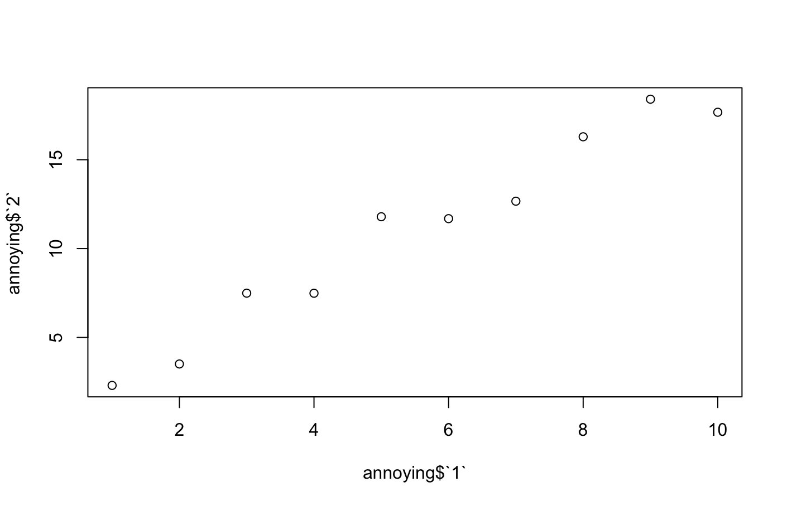

Our task was to complete the exercises from chapters 5 and 7 of the brilliant R for Data Science textbook.
These exercises were for practising handling data that is not "tidy" - data that doesn't follow these rules.
Our task was to calculate tuberculosis rates from tables of "untidy" data, without making it tidy first.
table2 has a column for the value "cases" or "population" - this is "untidy" because these values could be column names.
table2 <- tribble( ~country, ~year, ~type, ~count, "Afghanistan", 1999, "cases", 745, "Afghanistan", 1999, "population", 19987071, "Afghanistan", 2000, "cases", 2666, "Afghanistan", 2000, "population", 20595360, "Brazil", 1999, "cases", 37737, "Brazil", 1999, "population", 172006362, "Brazil", 2000, "cases", 80488, "Brazil", 2000, "population", 174504898, "China", 1999, "cases", 212258, "China", 1999, "population", 1272915272, "China", 2000, "cases", 213766, "China", 2000, "population", 1280428583 )
First I extracted the values for "cases" and "population" into vectors.
table2_cases <- table2 |> filter(type == "cases") |> select(count) |> pull(count) table2_population <- table2 |> filter(type == "population") |> select(count) |> pull(count)
I used these new vectors to create a vector for "rate" - the number of tuberculosis cases for every 10,000 people.
table2_rate <- table2_cases / table2_population * 10000
I looped backwards through table2 adding rows for "rate".
for(i in seq(nrow(table2), 1, by = -2)) {
table2 <- add_row(table2, country = table2$country[i], year = table2$year[i], type = "rate", count = table2_rate[i/2], .after = i)
}
I used formatC to format the "count" column - format="f" removes scientific format, and drop0trailing = TRUE drops zeros after the decimal point.
table2$count <- formatC(table2$count, format= "f", drop0trailing = TRUE)
Here's the resulting table2.
| country | year | type | count | |
|---|---|---|---|---|
| 1 | Afghanistan | 1999 | cases | 745 |
| 2 | Afghanistan | 1999 | population | 19987071 |
| 3 | Afghanistan | 1999 | rate | 0.3727 |
| 4 | Afghanistan | 2000 | cases | 2666 |
| 5 | Afghanistan | 2000 | population | 20595360 |
| 6 | Afghanistan | 2000 | rate | 1.2945 |
| 7 | Brazil | 1999 | cases | 37737 |
| 8 | Brazil | 1999 | population | 172006362 |
| 9 | Brazil | 1999 | rate | 2.1939 |
| 10 | Brazil | 2000 | cases | 80488 |
| 11 | Brazil | 2000 | population | 174504898 |
| 12 | Brazil | 2000 | rate | 4.6124 |
| 13 | China | 1999 | cases | 212258 |
| 14 | China | 1999 | population | 1272915272 |
| 15 | China | 1999 | rate | 1.6675 |
| 16 | China | 2000 | cases | 213766 |
| 17 | China | 2000 | population | 1280428583 |
| 18 | China | 2000 | rate | 1.6695 |
table3 has a column for the values "cases" and "population" together - this is "untidy" because these values could be in separate columns.
table3 <- tribble( ~country, ~year, ~rate, "Afghanistan", 1999, "745/19987071", "Afghanistan", 2000, "2666/20595360", "Brazil", 1999, "37737/172006362", "Brazil", 2000, "80488/174504898", "China", 1999, "212258/1272915272", "China", 2000, "213766/1280428583" )
I split the "rate" column into 2 values - cases and population.
cases_population <- str_split(table3$rate, "/")
I replaced the values in the "rate" column with new calculated values - the number of tuberculosis cases for every 10,000 people.
for(i in 1:nrow(table3)) {
table3$rate[i] <- as.numeric(cases_population[[i]][1])/as.numeric(cases_population[[i]][2]) * 10000
}
Here's the resulting table3 - note that the rates are the same as in table2.
| country | year | rate |
|---|---|---|
| Afghanistan | 1999 | 0.372740958392553 |
| Afghanistan | 2000 | 1.29446632639585 |
| Brazil | 1999 | 2.19393047799011 |
| Brazil | 2000 | 4.61236337331918 |
| China | 1999 | 1.66749511667419 |
| China | 2000 | 1.6694878795907 |
These exercises were for practising importing data with read_csv().
The first exercise has 5 read_csv() statements with errors. We had to work out the intention of each statement and correct it.
1. read_csv("a,b\n1,2,3\n4,5,6")
The intention is to read 3 columns and 2 rows, but column 3 doesn't have a name - I corrected it to this.
read_csv("a,b,c\n1,2,3\n4,5,6")
| a | b | c |
|---|---|---|
| 1 | 2 | 3 |
| 4 | 5 | 6 |
2. read_csv("a,b,c\n1,2\n1,2,3,4")
The rows have different numbers of columns - I corrected it to this.
read_csv("a,b,c,d\n1,2,3,4\n1,2,3,4")
| a | b | c | d |
|---|---|---|---|
| 1 | 2 | 3 | 4 |
| 1 | 2 | 3 | 4 |
3. read_csv("a,b\n\"1")
The quotes around the value are not closed, and the rows have different numbers of columns - I corrected it to this.
read_csv("a,b\n\"1\",\"2\"")
| a | b |
|---|---|
| 1 | 2 |
4. read_csv("a,b\n1,2\na,b")
The column names seem to be repeated - I corrected it to this.
read_csv("a,b\n1,2")
| a | b |
|---|---|
| 1 | 2 |
5. read_csv("a;b\n1;3")
The delimeter is a semicolon - I corrected it to this.
read_delim("a;b\n1;3", delim = ";")
| a | b |
|---|---|
| 1 | 3 |
The final exercise was practising referring to "nonsyntactic" column names - the column names are integers.
annoying <- tibble( `1` = 1:10, `2` = `1` * 2 + rnorm(length(`1`)) )
Extract the variable called 1.
annoying$`1`
[1] 1 2 3 4 5 6 7 8 9 10
Plot a scatterplot of 1 versus 2.
plot(annoying$`1`, annoying$`2`)

Create a new column called 3, which is 2 divided by 1.
annoying$`3` <- annoying$`1` / annoying$`2`
annoying$`3`
Rename the columns to "one", "two", and "three".
annoying <- annoying %>% rename(one = `1`, two = `2`, three = `3`)